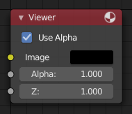

预览器节点¶

预览器节点。¶
预览器 节点是一个临时性的，合成进程中的查看器。它可以放置在节点流程树中的任意地方以检查图像或者是值映射情况。
当场景中有多个预览器节点时，可以通过鼠标左键进行图像结果显示的切换。当在任意节点上使用 Shift-Ctrl-LMB 组合热键，将在此节点上自动连接一个查看器节点。
属性¶
- Tile Order
使用预览器节点的属性面板，可以定义背景图像的 平铺顺序 (选中预览器节点时，侧栏的 属性 面板)：
- 三分法
依据 三分法 定义的九个区域进行扩展。
- 底视图
从底部计算并展开。
- 随机
随机尺寸计算并展开。
- 中心
沿着特定的X,Y轴向和轴心从中央展开。
X，Y轴
使用 图像 编辑器¶
预览器节点可以将图像结果在图像编辑器中进行显示。在标题栏上的关联 图像 数据块菜单选择 预览器节点 选项即可加载图像。图像编辑器将显示来自当前选中的预览器节点的图像。
要保存当前预览器节点的图像，使用 , Alt-S 来将内容保存为图像文件。
图像编辑器在标题栏也有额外的三种查看图像的方式：不带Alpha通道或包含Alpha通道的图像，单独查看Alpha或Z通道。在图像上单击鼠标左键，显示允许用户查看当前点击位置的采样信息(坐标位置，颜色值等信息)。